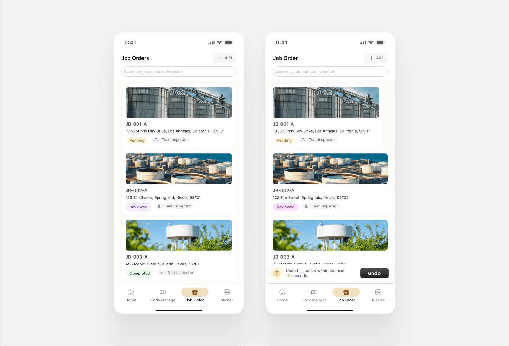
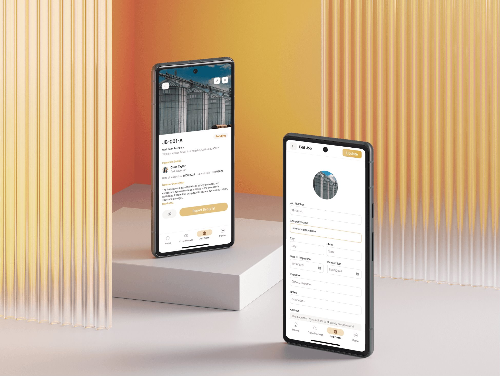
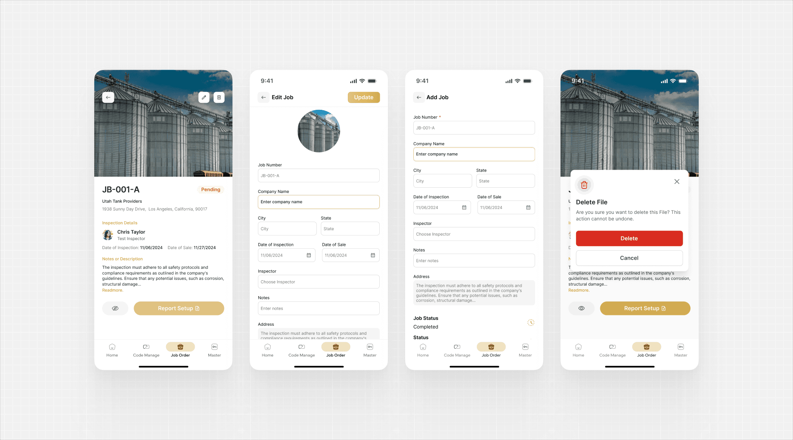
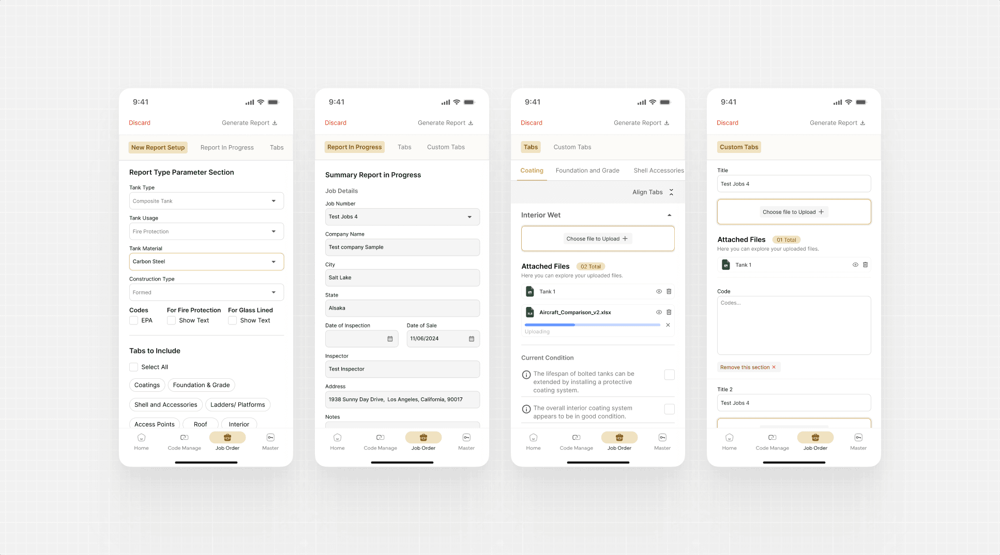
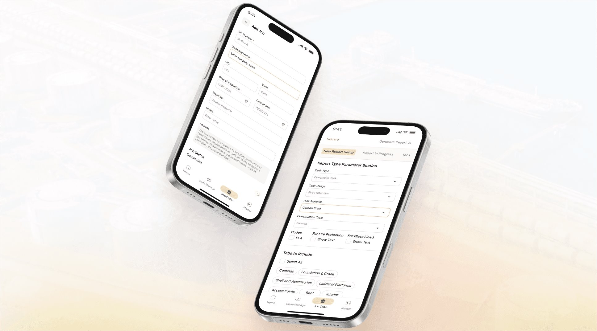

03 / 05 · Industrial maintenance · 6–8 weeks
Job Order & Inspection Management System.
Industrial Tank Cleaning & Inspection Service Provider. A mobile-first system for field inspectors and managers to track jobs, capture inspection data, and generate reports.

The problem
Job details scattered across emails and spreadsheets, manual inspection notes, and slow, inconsistent reports.
The solution
A mobile-first system to track job orders in real time, capture inspection data on-site, and generate structured reports.
The result
A streamlined inspection workflow that improves operational efficiency and standardizes reporting across sites.
My role
UI/UX Designer for a mobile-first job order and inspection system used across multiple locations.
Who it’s for
Field inspectors who need fast, low-friction data entry in field conditions, and managers who need a centralized view of ongoing and completed jobs.
The design challenge
Create a clear, structured, mobile-friendly workflow suitable for industrial field environments.
The design
Key screens from the mobile app. Select any image to enlarge it.




The story behind the design
Problem, objectives, and outcome
01 / Overview
Fragmented tools in the field. One workflow instead.
The client operates large-scale industrial tank cleaning, inspection, and tower-related services across multiple locations. Field teams were managing inspections using fragmented tools, leading to delays, manual errors, and inconsistent reporting.
Objective. Design a mobile-first system that enables field inspectors and managers to:
- Track job orders in real time
- Capture inspection data on-site
- Generate structured inspection reports
- Reduce manual coordination and paperwork
02 / The problem
Operational gaps, and what they meant for each user.
Operational gaps
- Job details scattered across emails and spreadsheets
- Manual inspection notes increasing risk of errors
- No real-time visibility into job status
- Report creation was slow and inconsistent
User challenges
- Inspectors needed fast, low-friction data entry in field conditions
- Managers lacked a centralized view of ongoing and completed jobs
- Reports required repetitive formatting work
Design challenge
Create a clear, structured, mobile-friendly workflow suitable for industrial field environments.
03 / Goals to screens
Each objective became a part of the app.
The four objectives map directly to what the screens do.
Track job orders in real time
A Job Orders list where every job shows its status (Pending, Reviewed, or Completed) and its inspector, with search by job number or inspector.
Capture inspection data on-site
Add Job and Edit Job forms, plus section tabs with file upload and current-condition checks for the inspector to complete on the spot.
Generate structured reports
A report setup step (tank type, usage, material, construction type, codes, and which tabs to include) that ends in a Generate Report action.
Reduce coordination & paperwork
Job details, the assigned inspector, dates, and notes sit together on a single job screen instead of in emails and spreadsheets.
04 / The inspection flow
From job list to generated report.
The inspection follows a simple, linear path, with a persistent bottom bar (Home, Code Manage, Job Order, Master) on every screen.
- 01Job list
- 02Job detail
- 03Report setup
- 04Report in progress
- 05Section tabs
- 06Generate report

05 / Outcome
One standardized workflow across sites.
A streamlined inspection workflow that improves operational efficiency and standardizes reporting across sites.
What it replaces
- Job details scattered across emails and spreadsheets
- Manual inspection notes and slow, inconsistent report creation
- No real-time view of job status for managers